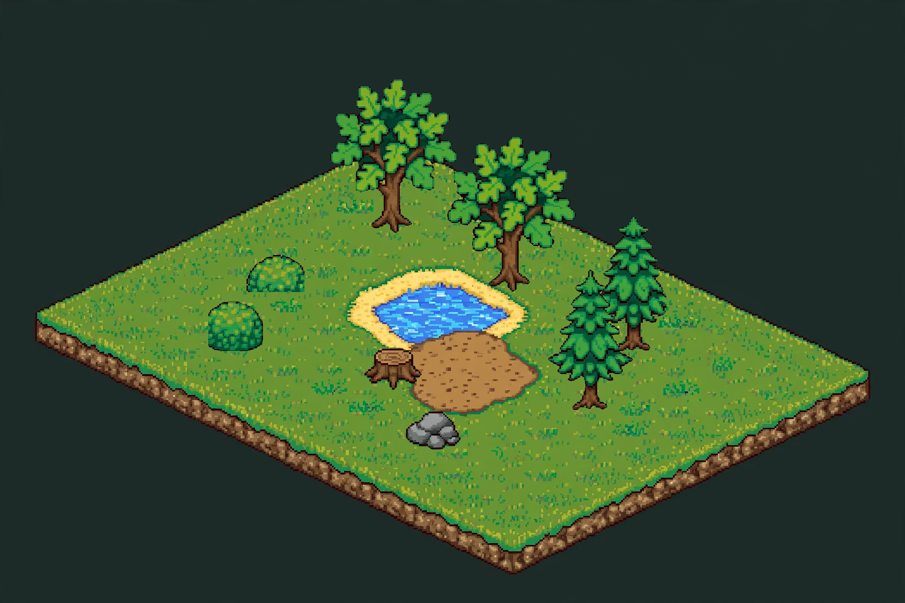

Deco preview — sam3-grove
8 Objekte · plate 1920×1280 · Navigator (WASD)

| id | status | cell | foot |
|---|---|---|---|
| oak-a | ok | [2, 2] | [834, 493] |
| oak-b | ok | [5, 2] | [1085, 619] |
| pine-a | ok | [8, 2] | [1335, 744] |
| pine-b | ok | [9, 4] | [1252, 869] |
| bush-a | ok | [2, 5] | [584, 619] |
| bush-b | ok | [3, 7] | [500, 744] |
| stump | ok | [6, 6] | [834, 827] |
| boulder | ok | [8, 7] | [918, 953] |